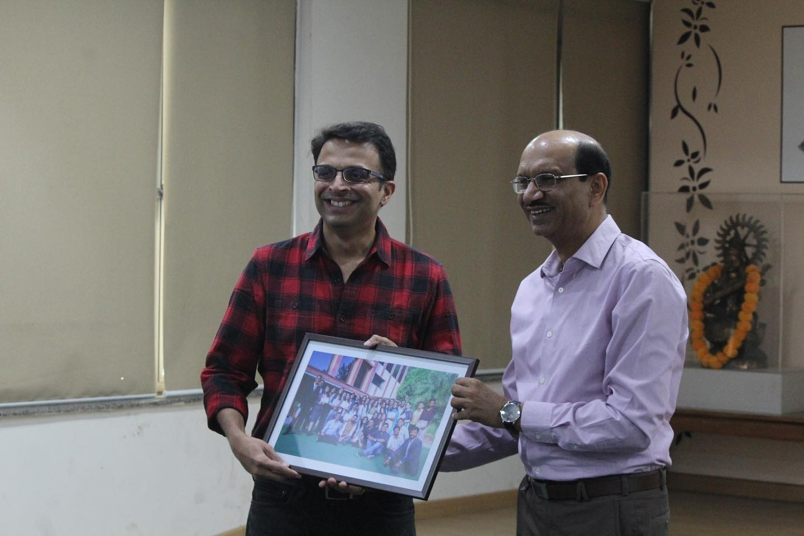

The Confederation of Indian Industry (CII) works to create and sustain an environment conducive to the growth of industry in India. Young Indians (Yi), an integral part of the CII, is a forum of young progressive Indians between the age group of 21 and 40 years, and comprises of successful entrepreneurs, professionals and achievers from different walks of life. Yi works with a three-fold motto of “Youth Leadership”, “Nation Building” and “Thought Leadership” and provides a platform for young Indians to realise the goal of a developed nation. Yuva is the student wing of Yi, which engages students to be a part of the nation building activities. Yi works with 86 institutions and 8500 students through its Yuva network. Extending the Yuva network further, the Ramanujan Yuva Chapter was initiated in the college in the year 2018. It engages a team of more than 100 registered student members from the college, and proactively synergizes them to participate in nation building activities. The various activities encourage and mobilize the students to foster the qualities of entrepreneurship, leadership, innovation.
